Painting: Kavunlu Natürmort (Still Life with Melon) by Şeker Ahmed Paşa, Sakıp Sabancı Museum collection. I chose it for the curve part. The whole melon has one long, clean contour against a dark background: the cut face on the left, the arc of the rind across the top and the rounded right end. That makes it a good shape to trace with a few cubic segments. The composition is also simple, a single object on a table, so a 3D table in front of the canvas continues the painting naturally.
The painting hangs as a textured quad in the z = 0 plane, inside a wooden frame and against a wall. In front of it is a table. On the table are the Part A box, a melon on a plate (a nod to the painting) and a desk lamp whose arm moves (Part B). The traced outline and a small cone that travels along it (Part D) sit on the painting itself. Everything is one WebGPU page (Figure 1).
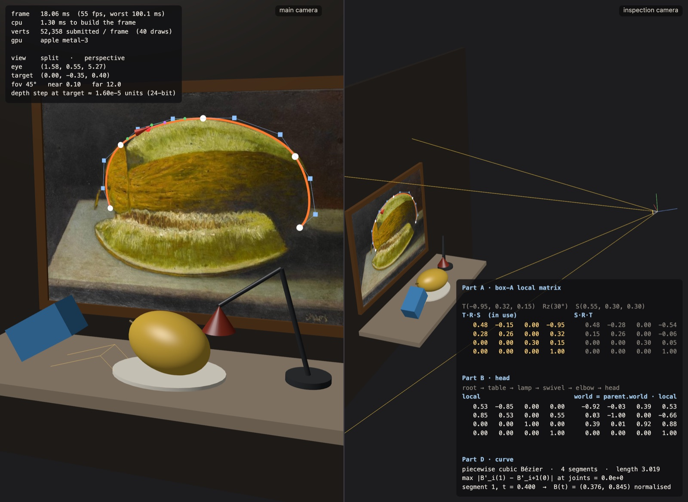
Convention. I use column vectors, p′ = M p, and a right-handed world with y up. Matrices are
Float32Array(16) in column-major order: entry (r, c) is stored at index 4c + r.
This is exactly how WGSL reads a mat4x4f from a uniform buffer, so nothing is transposed on upload. Because vectors
are multiplied on the right, M = T·R·S applies the scale first and the translation last.
src/math/mat4.js implements identity, multiply, translate, rotate about x/y/z, scale, transpose and the inverse of a rigid
transform, M−1 = [RT | −RTt]. The rigid inverse is used again for the view matrix
and for converting mouse rays into the painting's frame.
For the box with T(−0.95, 0.32, 0.15), Rz(30°) and S(0.55, 0.30, 0.30) the two orders give:
In T·R·S the box is scaled in its own axes, rotated, then moved. The last column is exactly the translation I typed, and the columns of the 3×3 block stay perpendicular, so the box keeps its right angles. In S·R·T the translation is applied first, so the offset itself gets rotated and scaled: the box ends up at S R t = (−0.540, −0.059, 0.045), not at t. The scale also comes after the rotation, so it stretches along the world axes of an already rotated box. The first two columns are no longer orthogonal (their dot product is −0.092), and the box turns into a sheared parallelepiped. Figure 2 shows both cases. The wireframe "ghost" is always drawn with the order that is not in use. Everywhere else in the code a local transform is built as T·R·S, because it reads as "go to the joint, turn there, then size the shape": the translation column is exactly the position I typed, rotations happen about the node's own origin, and the scale never reaches the offset.
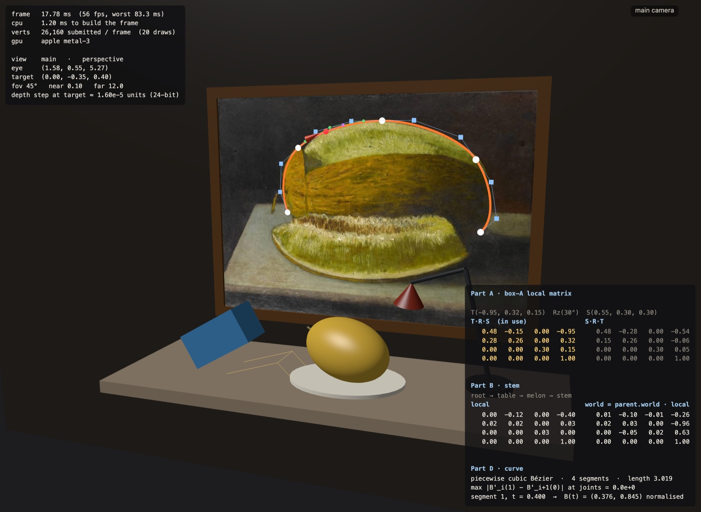
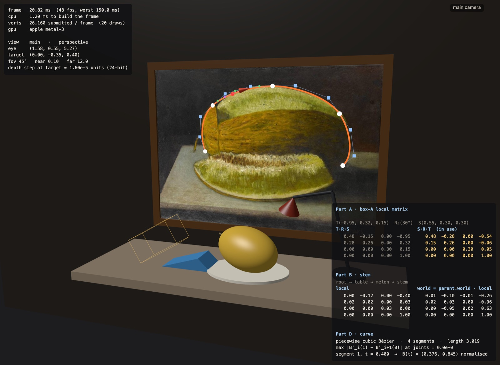
A Node holds a name, a local matrix, its parent and children, an optional mesh and an optional update(node, time)
function. One depth-first traversal per frame computes Wnode = Wparent · Lnode. Parents are always
finished before their children. The graph has 25 nodes and 7 levels (Figure 3). Three joints are animated: the lamp's
swivel turns about y by 0.45 sin(0.4t) rad, the elbow bends by 98° + 10° sin(0.9t) and the head
nods by 55° + 12° sin(0.7t + 1). A rotation at the swivel therefore carries both arms, the shade and the bulb with it.
One design decision mattered here. Nodes that only position things (table, melon, lamp, elbow…) never carry a scale. The scaled geometry hangs below them as separate leaves (melon-body, arm-1…). Otherwise a non-uniform scale such as the melon's (0.78, 0.48, 0.50) would leak into the stem and squash it, the same shear effect as in Part A. The debug mode draws every node's local axes (Figure 4). The axes use a pipeline without depth test, so axes inside a mesh stay visible.
The leaf stem has the path root → table → melon → stem, so W = Ltable · Lmelon · Lstem with Ltable = T(0, −1.3, 0.75), Lmelon = T(0.1, 0.27, 0.05) Ry(−25°) Rz(−6°) and Lstem = T(−0.4, 0.03, 0) Rz(80°) S(0.025, 0.12, 0.025). The stem's origin in world space is the last column of W:
The program prints the following for stem. The translation column matches the hand result to four decimals. The 3×3 block is Ry(−25°)Rz(−6°)Rz(80°)S, whose columns have lengths 0.025, 0.12 and 0.025, as they should.
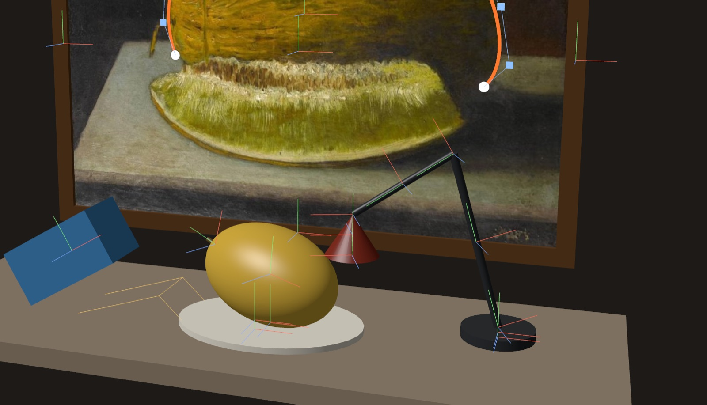
The camera sits at e, looks at the target c, and, as usual, looks down its own −z axis. Two cross products give an orthonormal frame:
The camera-to-world matrix is C = [u v w e] (axes and origin as columns). This is a rigid transform, so the view matrix is its
rigid inverse, V = C−1 = [RT | −RTe]. Its rows are u, v, w, and its translation column is
(−u·e, −v·e, −w·e). The unit test checks that V e = 0 and that V c lies on the negative z axis at distance ‖e − c‖.
Degenerate case: if up is parallel to w, then up × w = 0 and u is undefined. When ‖up × w‖ < 10−6, lookAt switches
to a different up vector: (0, 0, −sign wy) when the camera looks almost straight up or down, otherwise (0, 1, 0).
This choice keeps world x pointing right on screen in the overhead view. The top view button puts the camera exactly above the
target to show this case (Figure 6b).
With f = cot(fov/2), x and y are scaled by f/aspect and f, and the divide by wclip = −z produces the perspective. For depth, write zclip = A z + B. WebGPU wants zndc = 0 at z = −n and 1 at z = −f:
OpenGL's [−1, 1] version would have A = (f + n)/(n − f) and B = 2fn/(n − f). In WebGPU that matrix would send everything near the camera to zndc < 0, where it gets clipped. The orthographic matrix uses the same depth mapping, zndc = (z + n)/(n − f). Its half-height is set to d·tan(fov/2), where d is the orbit distance, so the target keeps its size when the projection is switched at run time (Figure 5). The mouse orbits (yaw/pitch on a sphere around the target), pans and zooms. Eye, target, fov, near and far are always shown on screen.
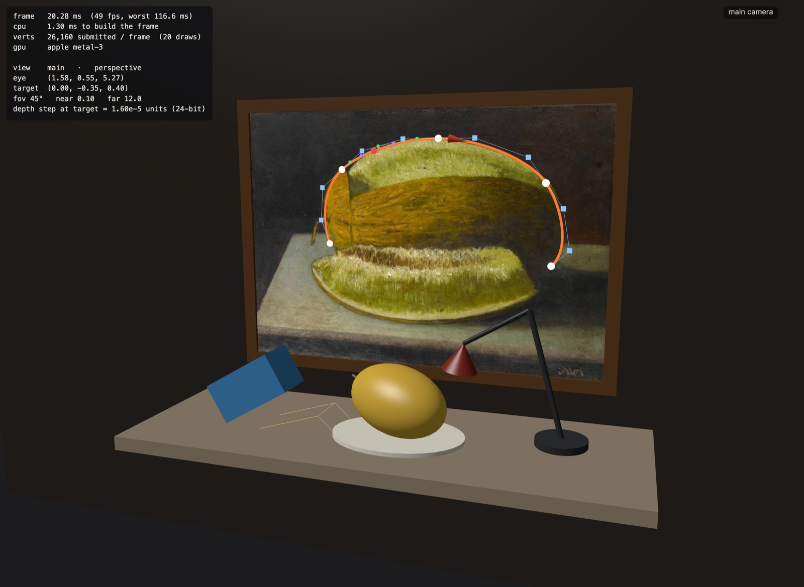
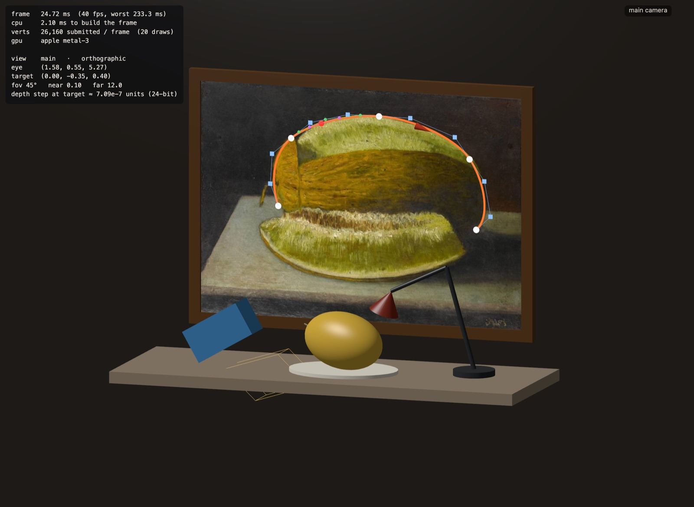
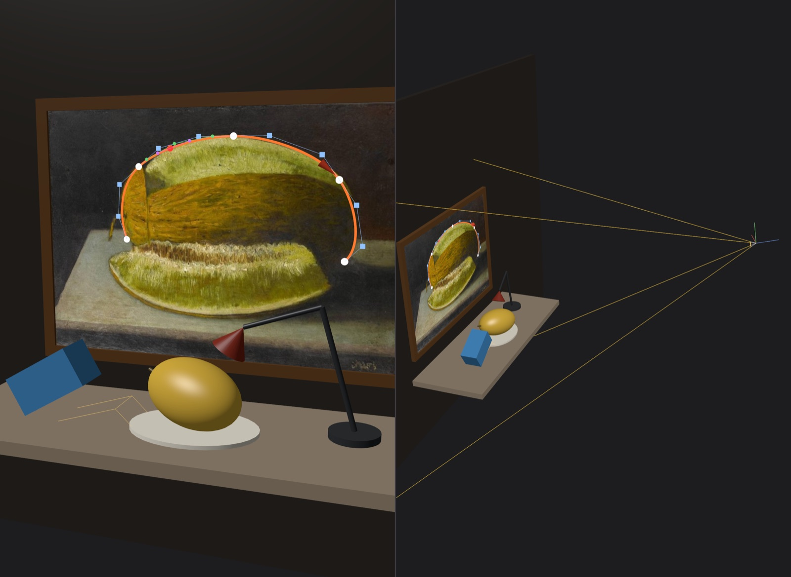
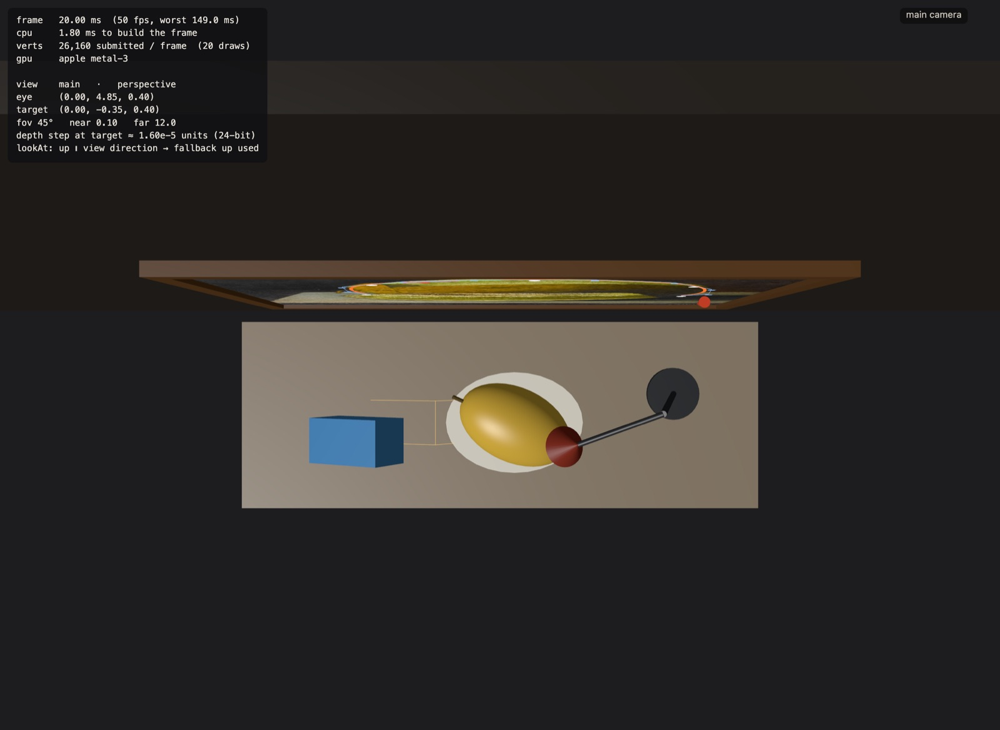
The inspection camera is fixed and draws the main camera's frustum. Its corners come straight from the camera frame: at distance d ∈ {n, f} the rectangle is centred at e − d w with half-size d tan(fov/2)·(aspect, 1). For the orthographic case the half-size is constant. A unit test projects these corners back through P V and gets NDC (±1, ±1, 0/1).
The depth buffer stores zndc, which is proportional to 1/z. Differentiating gives the smallest resolvable depth step at eye distance z, for a buffer with 2−24 resolution:
| near | far | Δz at distance 5.2 (the target) | Δz at distance 10 |
|---|---|---|---|
| 0.1 | 12 | 1.6·10−5 | 5.9·10−5 |
| 0.1 | 100 | 1.6·10−5 | 6.0·10−5 |
| 0.01 | 12 | 1.6·10−4 | 6.0·10−4 |
| 0.001 | 12 | 1.6·10−3 | 6.0·10−3 |
The far plane hardly matters, but every factor of ten taken off the near plane costs a factor of ten in precision. I use near = 0.1, far = 12. The orbit distance is clamped to at least 1.2, so in normal use the geometry stays well beyond the near plane. The whole scene (wall at about 5–6 units from the default eye) fits inside 12 with margin, and a short far plane keeps the frustum drawing readable. The curve is lifted 0.004–0.01 units off the painting. That is more than 100 times the depth step at this distance, so it does not z-fight with the quad. With near = 0.001 the step would be 1.6·10−3, and the ribbon would be only two or three depth steps in front of the painting, close enough to start fighting with it. The panel shows the current Δz live.
Bézier basis. A cubic segment is B(t) = Σ Pi bi(t) with the Bernstein polynomials b0 = (1 − t)3, b1 = 3t(1 − t)2, b2 = 3t2(1 − t), b3 = t3, which sum to (t + 1 − t)3 = 1.
Endpoints. At t = 0, b0(0) = 1, and b1, b2, b3 all contain the factor t, so they vanish and B(0) = P0. At t = 1, b3(1) = 1, and b0, b1, b2 contain the factor (1 − t), so B(1) = P3. ∎ Differentiating, B′(t) = 3[(1 − t)2(P1 − P0) + 2t(1 − t)(P2 − P1) + t2(P3 − P2)], so B′(0) = 3(P1 − P0) and B′(1) = 3(P3 − P2). The handles set the end tangents.
C¹ at a joint. The piecewise curve is stored as P0 … P3n. Segment k uses P3k … P3k+3, so two segments share the knot K = P3k. Position continuity (C⁰) holds by construction. C¹ needs 3(K − P3k−1) = 3(P3k+1 − K), i.e.
The editor keeps this true. Dragging a handle moves the mirrored handle on the other side, and dragging a knot moves both of its handles by the same amount. The panel prints max ‖B′k(1) − B′k+1(0)‖ over all joints, which stays at 0 up to rounding (about 10−16) after any edit.
de Casteljau. For a chosen segment and t the app draws the two intermediate levels of linear interpolation (three green points, then two purple ones) and the final point (red), which is B(t) (Figure 7b). A test checks that it agrees with the Bernstein form. Catmull–Rom. As the second curve family I implemented the uniform Catmull–Rom spline through the knots, C(t) = ½[2Pi + (Pi+1 − Pi−1)t + (2Pi−1 − 5Pi + 4Pi+1 − Pi+2)t2 + (−Pi−1 + 3Pi − 3Pi+1 + Pi+2)t3]. It passes through every point with tangent (Pi+1 − Pi−1)/2. Each segment is the Bézier with handles Pi + (Pi+1 − Pi−1)/6 and Pi+1 − (Pi+2 − Pi)/6, which a unit test confirms. The end segments use reflected ghost points (2P0 − P1). Both curve types share the same knots, so I can switch between them while tracing (Figure 7c).
Tracing and interaction. The control points live in the painting's plane. A mouse press is turned into a ray from the camera, the ray is
intersected with the plane of the painting node, and the hit is mapped into the painting's frame with its rigid inverse. Picking happens in
screen space (12 px radius), so it works the same under both projections. Double-clicking adds a segment. I placed the knots on the outline of the
whole melon: the bottom of the cut face, the top of the cut, the top of the rind, the shoulder and the right end. I then moved the handles until the
middle of each segment lay on the contour. Animation. The rider moves at constant speed: a 400-sample arc-length table maps distance to
parameter by binary search. Its frame is [T × Z, T, Z, p], with T the unit tangent and Z the painting normal, so the cone always points along the curve.
Export writes curve.json with normalised coordinates, (0, 0) at the bottom-left and (1, 1) at the top-right (Appendix A).
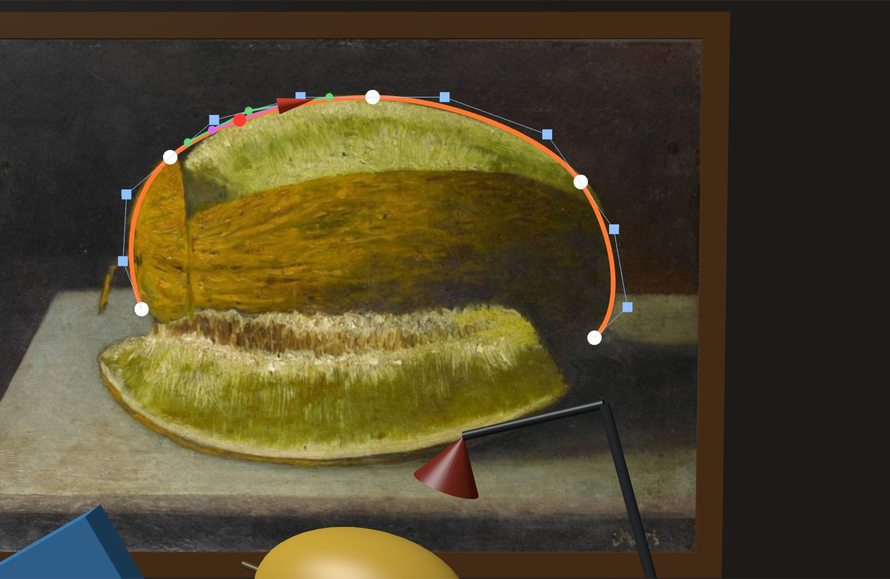
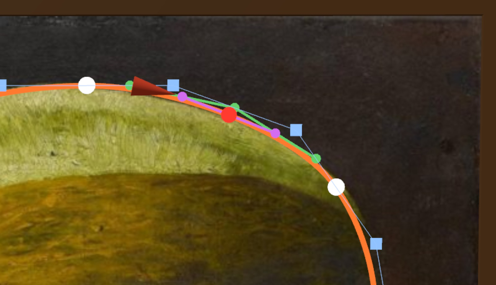
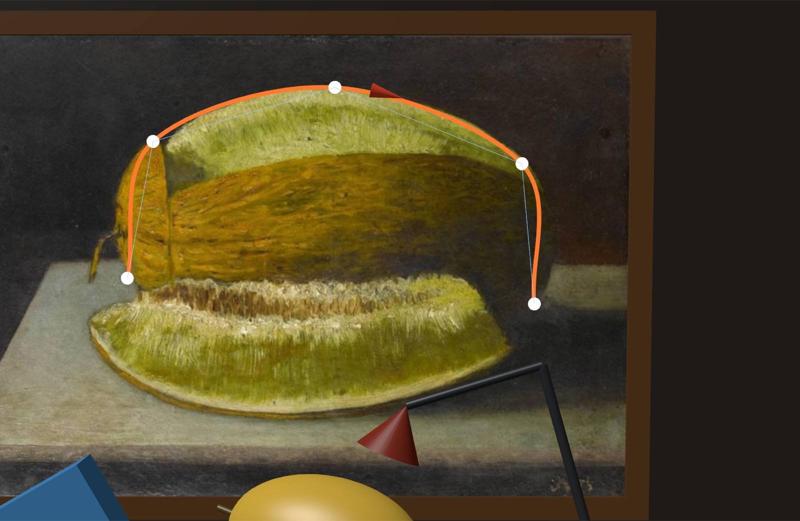
Everything is one page. The code is split into math/ (vectors, matrices, curves: no WebGPU), scene/ (nodes, the scene,
cameras, the editable curve), render/ (device setup, WGSL, pipelines, procedural meshes) and ui/ (panel, mouse, text overlays).
The renderer has four pipelines: lit meshes, the textured painting, lines and flat overlay triangles, plus the overlay-line variant for
the axes. Per-object and per-view uniforms live in two buffers addressed with 256-byte dynamic offsets, so one bind group serves every
draw. Rendering uses 4× MSAA. The painting is an rgba8unorm-srgb texture and the frame is rendered through an
-srgb view of the canvas, so lighting is computed in linear space and encoded once on output. The controls switch views and projection,
reset the camera, the curve or the whole scene, and toggle every debug drawing. 26 unit tests (npm test) cover the maths, the
scene graph and the camera.
| Mode (canvas 2600×1900 px, 2× DPR) | Frame time avg / p95 / max | CPU per frame (median / max) | Vertices / frame | Draws |
|---|---|---|---|---|
| Main camera | 16.67 / 17.7 / 17.8 ms | 1.9 / 2.9 ms | 26 190 | 20 |
| Side by side | 16.67 / 17.7 / 17.8 ms | 1.8 / 3.2 ms | 52 418 | 40 |
| Side by side + node axes | 16.95 / 17.7 / 33.4 ms | 1.9 / 4.3 ms | 52 706 | 42 |
Measured on an Apple M3 (10-core GPU), macOS 26.3.1, in a Chromium 152 based browser, over 5 s (about 300 frames) per mode. "Vertices" counts indices for indexed draws. The frame time sits at the 60 Hz refresh interval in every mode, so the GPU is not the limit for this scene. The one 33 ms frame is a single missed refresh. CPU time (animation, world matrices, line and triangle batches, uniform uploads) is about 2 ms. I did not use GPU timestamp queries, so the pure GPU time is not measured. The text panels are refreshed ten times a second rather than every frame, because their content does not need to change faster than that.
lookAt took the world axis least aligned with w as the new up vector.
For a camera looking straight down that is the x axis, so the screen's up pointed along world x and the scene appeared on its side. I noticed
this while working out by hand what the top view should look like. The fallback now uses the z axis for near-vertical views, and a unit test
checks that world +x still maps to screen right.depthCompare: 'always' fixed this without affecting the curve overlays, which must stay depth-tested.public/curve.json){ "painting": "Kavunlu Natürmort", "artist": "Şeker Ahmed Paşa",
"coordinates": "normalised to the painting: (0,0) bottom-left, (1,1) top-right",
"type": "bezier", "continuity": "C1 (handles mirrored at every joint)", "segments": 4,
"points": [
{ "x": 0.2417, "y": 0.4781, "role": "knot" }, { "x": 0.2167, "y": 0.5717, "role": "handle" },
{ "x": 0.2222, "y": 0.7012, "role": "handle" }, { "x": 0.2819, "y": 0.7729, "role": "knot" },
{ "x": 0.3417, "y": 0.8446, "role": "handle" }, { "x": 0.4583, "y": 0.8884, "role": "handle" },
{ "x": 0.5556, "y": 0.8884, "role": "knot" }, { "x": 0.6528, "y": 0.8884, "role": "handle" },
{ "x": 0.7917, "y": 0.8167, "role": "handle" }, { "x": 0.8375, "y": 0.7251, "role": "knot" },
{ "x": 0.8833, "y": 0.6335, "role": "handle" }, { "x": 0.9028, "y": 0.4821, "role": "handle" },
{ "x": 0.8583, "y": 0.4223, "role": "knot" } ] }
The file in the repository has one key per line; it is reformatted here to save space. Check C¹ at the second knot: 2·(0.2819, 0.7729) − (0.2222, 0.7012) = (0.3416, 0.8446), which is the next handle (to rounding).
Claude Opus 5.5 was used to generate test scripts and debug some of the code. Opus 5.5 also helped with generating the report based on the app.